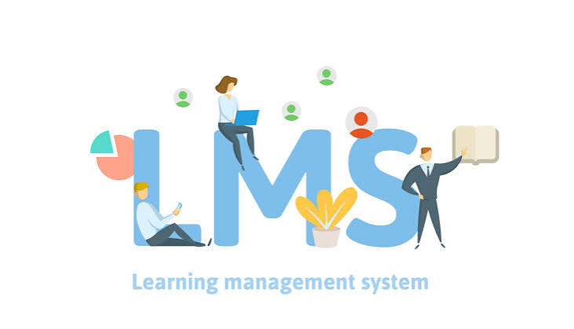

Un LMS, que en español significa Sistema de Gestión del Aprendizaje, es una plataforma tecnológica diseñada para facilitar, organizar y administrar los procesos de enseñanza y aprendizaje de manera digital. Este sistema permite a los profesores, instituciones educativas y empresas crear cursos, compartir materiales didácticos, publicar videos y documentos, asignar tareas, realizar exámenes y evaluar el desempeño de los estudiantes. Además, permite llevar un seguimiento del progreso académico, registrar calificaciones, facilitar la comunicación entre docentes y alumnos y acceder a los contenidos educativos desde diferentes dispositivos con conexión a internet. Los LMS se utilizan en escuelas, universidades, centros de formación y empresas para mejorar la organización de la educación, facilitar el aprendizaje a distancia y presencial, y ofrecer un espacio centralizado donde los usuarios puedan desarrollar sus conocimientos y habilidades de manera flexible, organizada y eficiente.
